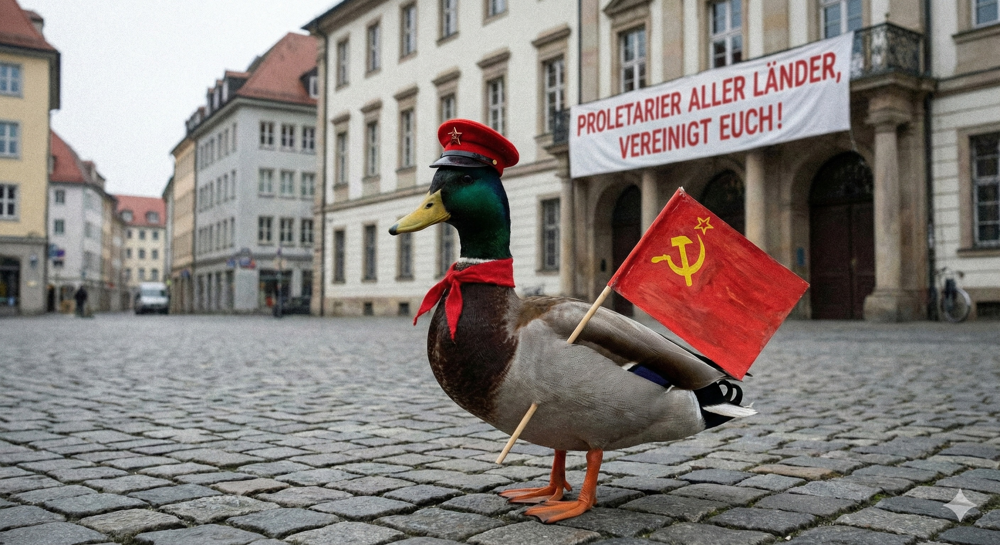
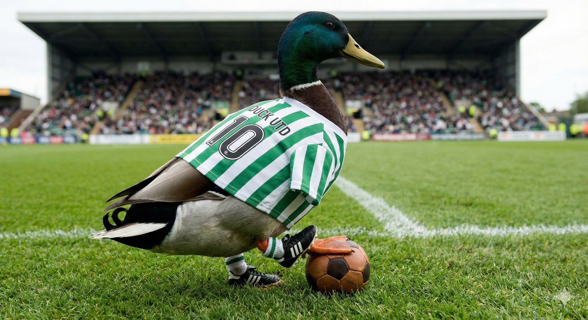
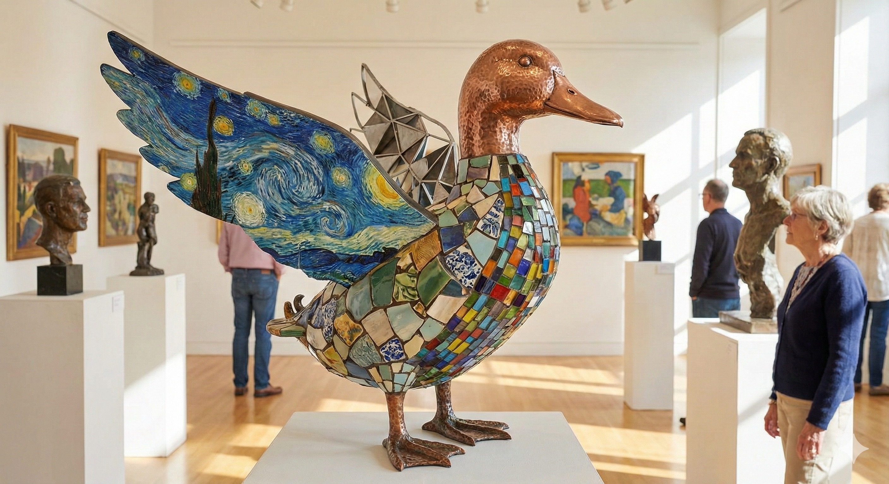

📰 Blog-Rubriken
Willkommen in der Quackademia der World of Ducks! Tauche ein in die gefiederten Feuilletons und entdecke alles von Entenpolitik bis zu philosophischen Quackereien und wilden Teich-Partys.

🐣 Politik und Wirtschaft
Neueste Analysen über Enten-Demokratien. (In Arbeit)
📚 Karl Marx & Friends
Philosophische Diskussionen & Manuskripte.

🦆 Frank Rosin
Tipps und Tricks in der Küche (In Arbeit)

🎉 Party
Die besten Spots für Teichraves. (In Arbeit)
⚽ Soccer
Duckball News & Ergebnisse. (In Arbeit)
🎬 Film und Kunst
Von Leonardo Da Vinci bis Di Caprio.